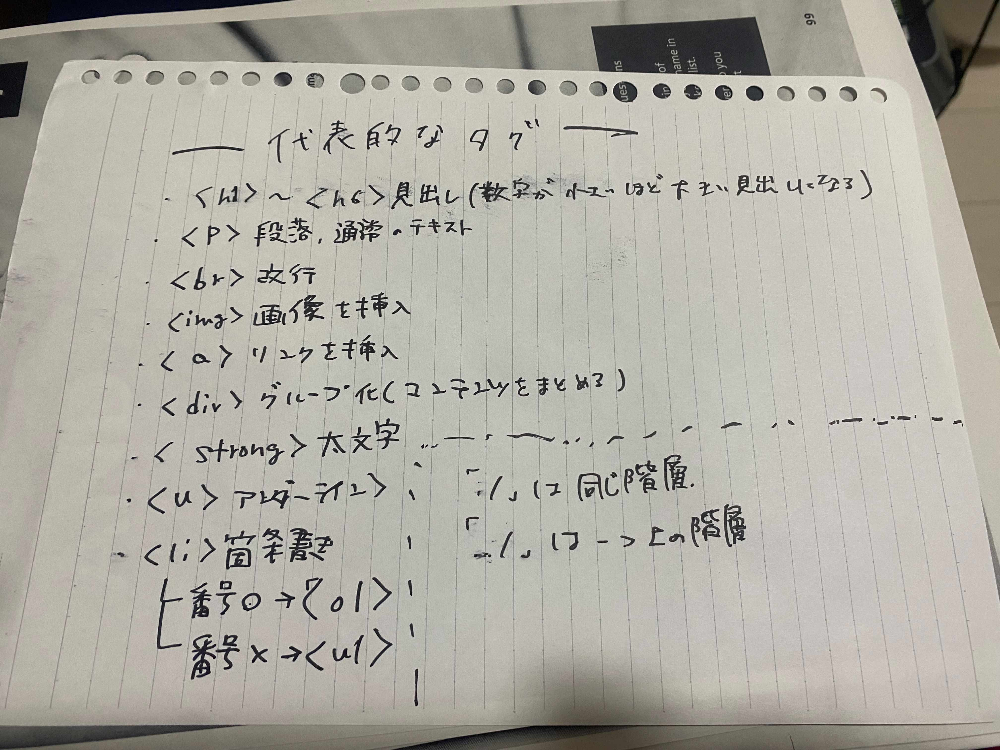

～～Gitとhtmlに関して～～
Git
Gitとはソースコードのバージョン管理システムです。※ソースコードとはプログラミング言語で書かれたコンピュータープログラムです
Gitでは自分のパソコンに全ての変更履歴を含む完全なフォルダの複製を作成できるため個々人たちが変更をそれぞれ加えても衝突せずに済みます。
Gitは今では複数人で作業を行う際には必須ツールと言われるほどになっています。
Gitでできること
- ファイルの変更履歴管理
- 過去のファイルに戻す
- 編集した履歴を複数人で共有
参考
（【初心者向け】Git（ギット）とは何か）
HTML
HTMLとは「HyperText Markup Langage」の略で
"webページを作成するためにつくられた言語"です。
※プログラミング言語ではありません。
現在インターネット上で見られる多くのwebページはHTMLで作成されています。
webページで見られるテキストやアウターラインなどの装飾、画像やリンク、フォームなどは
全てHTMLの指示によって表示されます。
覚えておくと便利なHTMLの便利なタグ
※タグとはテキストに意味を与える目印です
デザイン演習Ⅰ・Ⅱトップページ
XBPトップページ
Yahoo
pdfファイル
kurashiruさんの動画です